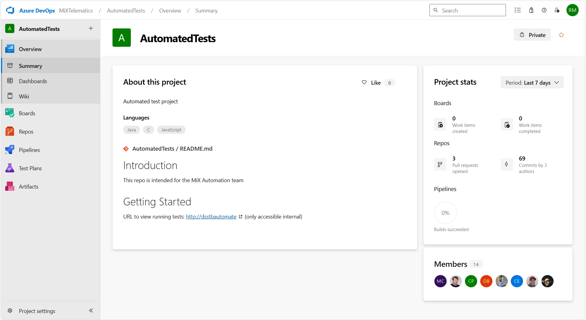

Cloning from Azure DevOps
Azure DevOps is where all our testing repositories are located. Throughout your testing journey, you will be pulling and pushing to the various repos that are housed in this site. You may access it here.
Navigating Azure DevOps

Upon accessing Azure DevOps, you will be greeted by an overview summary. To the left there is a navigation pane with several links. Click on the "Repos" navigation link. Alternatively, this link will take you right there.
You will then be greeted by a repository file system. If you click on the dropdown by the breadcrumb in the top navigation bar, you will be presented with a list of several options. Assuming you are in training, scroll to the Training_AutomatedTests option and click. This will open your training repository.
Authentication
Before you are ready to clone from Azure, you need to ensure that your system is set up with Azure DevOps HTTPS or SSH. This is beyond the scope of this tutorial, but the instructions for doing so are available here.
Once you have set up authentication with Azure, click on the "Clone" button to copy the clone link to your clipboard. To clone the repo, open PowerShell, and preface the command with git clone. Your commmand line should look something like this:
git clone https://MiXTelematics@dev.azure.com/MiXTelematics/AutomatedTests/_git/Training_AutomatedTests
Or this:
git clone git@ssh.dev.azure.com:v3/MiXTelematics/AutomatedTests/Training_AutomatedTests
Then press Enter to clone the repository.
Important repositories
- Java:
- AutomatedTests: The Java shakedown repo.
- DynaMiXRegression: The Java regression repo.
- MobileRegression: The current (old) testing repo.
- MobileTests: The upcoming (new) repo.
- C#:
- PlaywrightRegression: The C# regression repo.
- PlaywrightShakedown: The C# main shakedown repo.
- PlaywrightUnityShakedown: Playwright shakedown tests on the Unity platform.
- Microsmoketests: C# micro smoke testing repo.
- PlaywrightWatchdogs: C# watchdog tests.